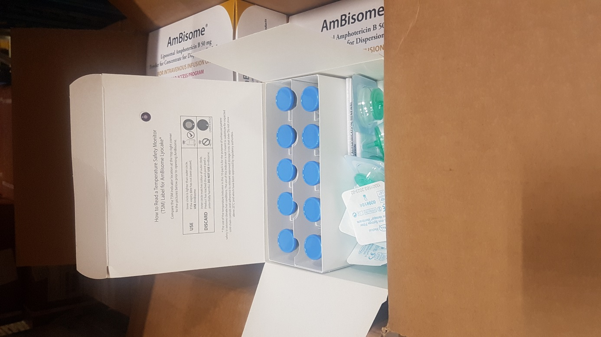
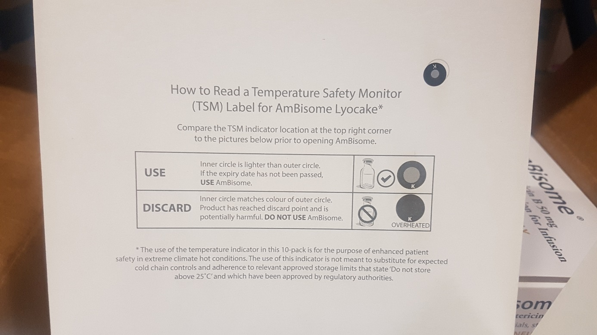

EN Information Amphotericine B
Information
Please be informed that Gilead the manufacturer of DINJAMBL5V- AMPHOTERICIN B liposomal complex, 50 mg, powder, vial has begun to supply product with a TSM (Temperature Safety Monitor) label and you may receive such product in your mission in the future. There is one TSM inside of the lid of the carton box which holds 10 vials of product – please see pictures below.
The product should not be treated in any way differently than at present – it needs still to be stored/transported below

25 ° C.The TSM is similar to, but not the same, as the VVM (Vaccine Vial Monitor) which is in common use in MSF.
A TSM label which has been triggered (as overheated) can be used to clearly identify product which should not be used.

However, please continue as normal to submit an excursion report (with available Logtag data) for any DINJAMBL5V- product which has experienced a temperature excursion (above 25C, below 2C).Product which has experienced an excursion with an untriggered TSM label still needs to be assessed at HQ level.